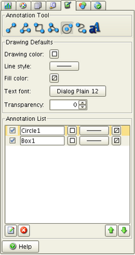

CoastWatch Data Analysis Tool Help: Shape and Text Annotations
In this section:
What are annotations?
Annotations allow you to place text, lines, polygons, and
other shapes on the data view. You can choose the default color,
line style, fill, and text font, and manipulate the annotations
as layers, similar to data overlays and surveys.
Annotation tools
The following figure shows the annotation controls, with the annotation
tool buttons and current list of annotation layers:

Each Annotation Tool adds a different type
of layer:
- Line (click and drag)
- Draws a line in the current color and style.
- Polyline (click endpoints, double- or right-click to end)
- Draws a series of connected line segments in the current color
and style.
- Box (click and drag)
- Draws a rectangular box in the current color and style, and
fills with the fill color.
- Polygon (click corners, double- or right-click to end)
- Draws an irregular polygon in the current color and style, and
fills with the fill color.
- Circle (click and drag)
- Draws a circle from the center to radius point in the current
color and style, and fills with the fill color.
- Curve (click control points, double- or right-click to end)
- Uses a set of polyline control points to draw a Bezier curve in
the current color and style.
- Text (click for placement and enter text)
- Places the specified text in the current font and color. The
text font size is relative to the screen, and so remains constant if
the data view zoom factor is modified. The text anchor point moves
with the view.
Annotation list
Once added to the annotation layer list, annotations are similar to
surveys and overlays, in that they can be modified, renamed, set
visible or invisible, moved up or down in the list, and deleted (see
the overlays section for
details).
Back to overview